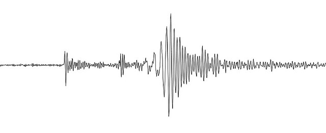
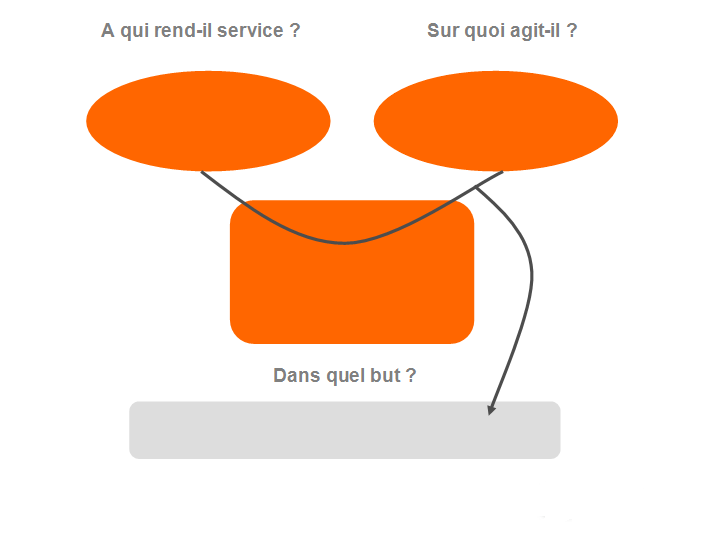

La table sismique

Revue de Projet n°1 par Aurélien Surier Garofalo
Projet en coopération avec Alexandre Jacquemin, Nathan Villemot & Baptiste Tulon.
Sommaire
a. Introduction
b. Mise en place du projet
c. Définition des besoins
d. Contraintes (sociales, technologiques, économiques)
e. Solutions techniques envisagées
f. Conclusion
Introduction
La mise en place du projet
Définition des besoins

Solutions techniques envisagées
solutions techniques ont été envisagées

de recherches instensives
Conclusion
Merci pour votre écoute !

Github

Site Internet
Pour conclure...
Les contraintes :
Le projet

Gestion des ocsillations
Mesure des oscillations
Mesure des accélérations
Mesure des déformations et de l'oscillation
On doit pouvoir mesurer les déformations et l'oscillation subies par le bâtiment
On doit pouvoir afficher la valeur des déformations subies par le bâtiment sur une interface graphique
Le choix technique validé
Backend
Frontend
Etat du projet